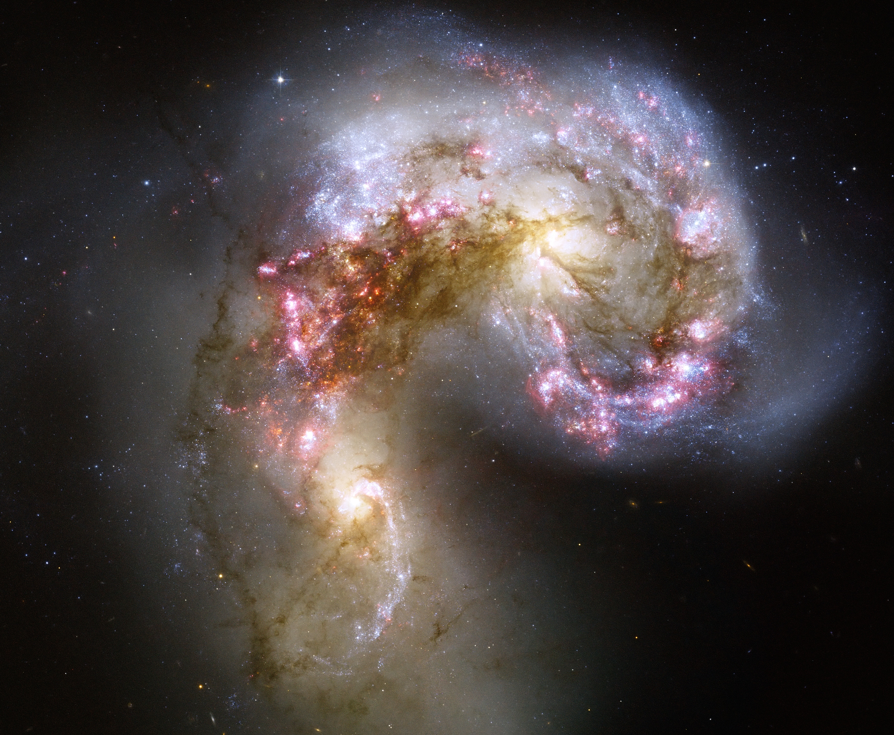

When galaxies collide, they interact through gravity, creating substantial changes throughout the universe. They scatter the celestial bodies they hold within them and sometimes even create whole new galaxies. For that to happen though, they must be roughly the same size; otherwise, one would just consume the other. Despite the extraordinary nature of these events, galactic cannibalism is surprisingly not too rare in the vast expanse of the cosmos. Of course, they aren’t common, but they're more frequent than other cosmic events.
Galaxies collide when they move close enough for their gravity to pull them together, leading to stunning interactions. As they are pulled closer together, they accelerate, gaining more and more velocity. If the two galaxies are roughly the same size, once they meet, they smash into each other, scattering the planet and stars they held. During this collision, the stars and planets from the two different galaxies slam into one another spreading debris in all directions. The two galaxies oscillate around each other many times ripping each other to shreds.
